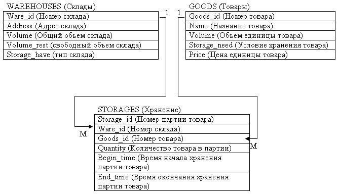
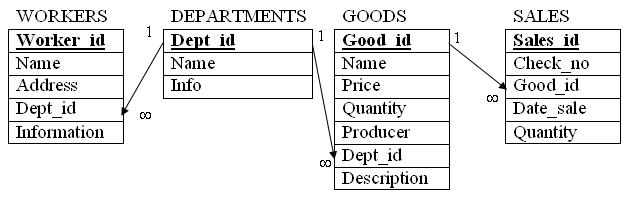

Практика 1. Настройка структур памяти при создании основных объектов БД
Создание базы данных складов
Рассмотрим пример создания таблиц с заданием параметров управления памятью с учетом операций, которые чаще всего будут выполняться над этими таблицами. Эта схема данных будет в дальнейшем использоваться в лекциях. |  |
|---|
Схема базы данных приведена на рисунке 11.

Рисунок 11 - Схема БД
Описание структур каждой таблицы приведено в таблицах 4-6.
Таблица 4 - Таблица «Склады» (Warehouses)
Имя поля таблицы | Тип данных | Описание поля |
Ware_id | NUMBER(3) NOT NULL PRIMARY KEY | Номер склада |
Address | VARCHAR2(30) | Адрес склада |
Volume | NUMBER(6,2) | Общий объем склада |
Volume_rest | NUMBER(6,2) | свободный объем склада |
Storage_have | VARCHAR2(40) | тип склада |
Таблица 5 - Таблица «Товары» (Goods)
Имя поля таблицы | Тип данных | Описание поля |
Goods_id | NUMBER(3) NOT NULL PRIMARY KEY | Номер товара |
Name | VARCHAR2(20) | Название товара |
Volume | NUMBER(6,2) | Объем единицы товара |
Storage_need | VARCHAR2(20), | Условие хранения товара |
Price | NUMBER(6,2) | Цена единицы товара |
Таблица 6 - Таблица «Хранение» (Storages)
Название поля | Тип данных | Описание полей |
Storage_id | NUMBER(5) NOT NULL PRIMARY KEY | Номер партии товара |
Ware_id | NUMBER(3) | Номер склада |
Goods_id | NUMBER(5) | Номер товара |
Quantity | INTEGER | Количество товара в партии |
Begin_time | DATA | Время начала хранения партии товара |
End_time | DATA | Время окончания хранения партии товара |
Итак, вы можете создать выше описанные таблицы следующими командами:
- Таблица «Склады»: основные действия - чтение информации, редактирование; объем таблицы существенно не увеличивает.
CREATE TABLE WAREHOUSES (
WARE_ID NUMBER(3) NOT NULL PRIMARY KEY,
ADDRESS VARCHAR2(30),
VOLUME NUMBER(6,2),
VOLUME_REST NUMBER(6,2),
STORAGE_NAVE VARCHAR2(40))
PCTFREE 10
PCTUSED 80
STORAGE (
INITIAL 50K
NEXT 50K
MAXEXTENTS 5
PCTINCREASE 0);
- Таблица «Товары»: часты операции добавления и удаления, но редактирование существенно не изменяет объем таблицы.
CREATE TABLE GOODS (
GOODS_ID NUMBER(4) NOT NULL PRIMARY KEY,
NAME VARCHAR2(20),
VOLUME NUMBER(6,2),
STORAGE_NEED VARCHAR2(20),
PRICE NUMBER(6,2))
PCTFREE 10
PCTUSED 60
STORAGE (
INITIAL 100K
NEXT 100K
MAXEXTENTS 20
PCTINCREASE 10);
- Таблица «Хранение»: часты операции добавления и удаления, но редактирование объем таблицы практически не изменяет.
CREATE TABLE STORAGES (
STORAGE_ID NUMBER(5) NOT NULL PRIMARY KEY,
WARE_ID NUMBER(3) REFERENCES WAREHOUSES (WARE_ID),
GOODS_ID NUMBER(5) REFERENCES GOODS (GOODS_ID),
QUANTITY INTEGER,
BEGIN_TIME DATE,
END_TIME DATE)
PCTFREE 5
PCTUSED 60
STORAGE (
INITIAL 200K
NEXT 200K
MAXEXTENTS 50
PCTINCREASE 20);
Создание базы данных магазина
Рассмотрим примеры создания таблиц базы данных магазина с заданием параметров управления памятью с учетом операций, которые чаще всего будут выполняться над этими таблицами. | |
|---|
Схема базы данных приведена на рисунке 12.

Рисунок 12 - Схема БД магазина
Описание структур каждой таблицы приведено в таблицах 7-10.
Таблица 7 - Таблица «Отделы» (Departments)
Имя поля таблицы | Тип данных | Описание поля |
DEPT_ID | NUMBER (4) NOT NULL PRIMARY KEY | Идентификатор отдела |
NAME | VARCHAR2(20) | Название отдела |
INFO | VARCHAR2(40) | Информация об отделе |
Таблица 8 - Таблица «Товары» (Goods)
Имя поля таблицы | Тип данных | Описание поля |
Good_id | NUMBER(4) NOT NULL PRIMARY KEY | Номер товара |
Name | VARCHAR2(20) | Название товара |
Price | NUMBER(10,2) | Цена за единицу товара |
QUANTITY | INTEGER | Количество единиц товара |
PRODUCER | VARCHAR2(20) | Производитель товара |
DEPT_ID | NUMBER (4) NOT NULL | Код отдела, в котором находится товар |
DESCRIPTION | VARCHAR2(50) | Описание товара |
Таблица 9 - Таблица «Сотрудники» (Workers)
Название поля | Тип данных | Описание полей |
WORKERS_ID | NUMBER (5) NOT NULL PRIMARY KEY | Идентификатор сотрудника |
NAME | VARCHAR2(20) | Название отдела |
ADDRESS | VARCHAR2(40) | Адрес |
DEPT_ID | NUMBER (4) NOT NULL | Код отдела, в котором работает сотрудник |
INFORMATION | VARCHAR2(40) | Информация о сотруднике |
Таблица 10 - Таблица «Продажи» (Sales)
Название поля | Тип данных | Описание полей |
SALES_ID | NUMBER (4) NOT NULL PRIMARY KEY | Код продажи |
CHECK_NO | NUMBER (6) | Номер чека, по которому проведена продажа |
GOOD_ID | NUMBER (4) NOT NULL | Код товара |
DATE_SALE | DATE NOT NULL | Дата продажи |
QUANTITY | INTEGER | Количество проданного товара |
Обратите внимание на установление связей между соответствующими полями родительских и дочерних таблиц.
Итак, вы можете создать выше описанные таблицы следующими командами:
- Таблица «Отделы»: основные действия - чтение информации, редактирование; объем таблицы существенно не увеличивает.
CREATE TABLE Departments (
Dept_id NUMBER (4) NOT NULL PRIMARY KEY,
Name VARCHAR2(20) NOT NULL,
Info VARCHAR2(40) DEFAULT NULL)
PCTFREE 10
PCTUSED 80
STORAGE (INITIAL 7K
NEXT 7K
PCTINCREASE 0
MAXEXTENTS 10);
- Таблица «Рабочие»: бывают операции добавления и удаления, но редактирование существенно не изменяет объем таблицы.
CREATE TABLE WORKERS (
WORKER_ID NUMBER (5) NOT NULL PRIMARY KEY,
NAME VARCHAR2 (20),
ADDRESS VARCHAR2(40),
DEPT_ID NUMBER(4) NOT NULL REFERENCES DEPARTMENTS (DEPT_ID),
INFORMATION VARCHAR2(40) DEFAULT NULL)
PCTFREE 10
PCTUSED 80
STORAGE (INITIAL 10K
NEXT 10K
PCTINCREASE 0
MAXEXTENTS 10);
Самостоятельно напишите команды создания таблиц Goods и Sales | |
|---|
Заполнение таблиц
Добавление записей в создании таблицы производится с помощью команды INSERT:
INSERT INTO Departments VALUES (1,'Fruits', NULL);
Напишите команды заполнения таблиц так, чтобы в них было по 5-6 записей. | |
|---|